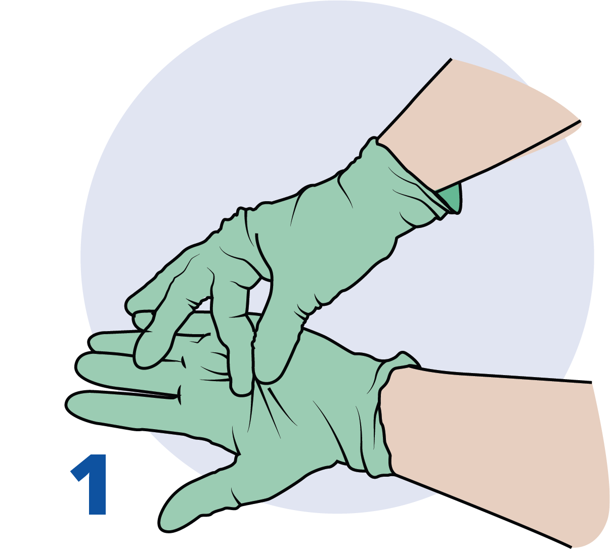
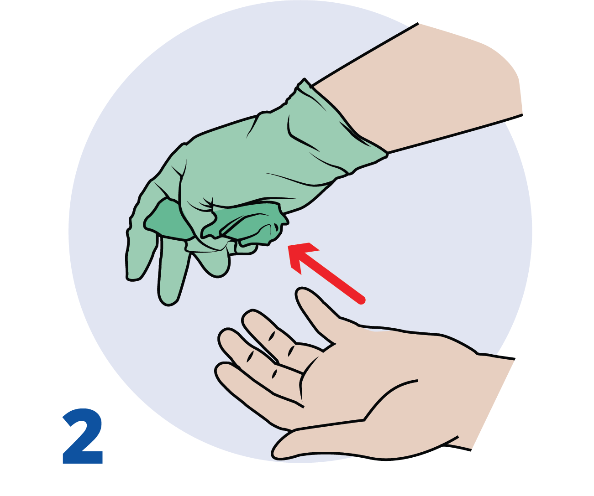
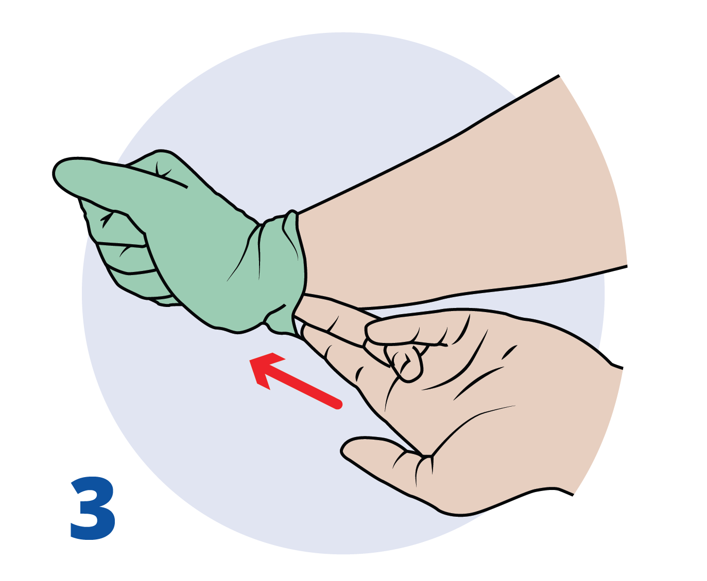
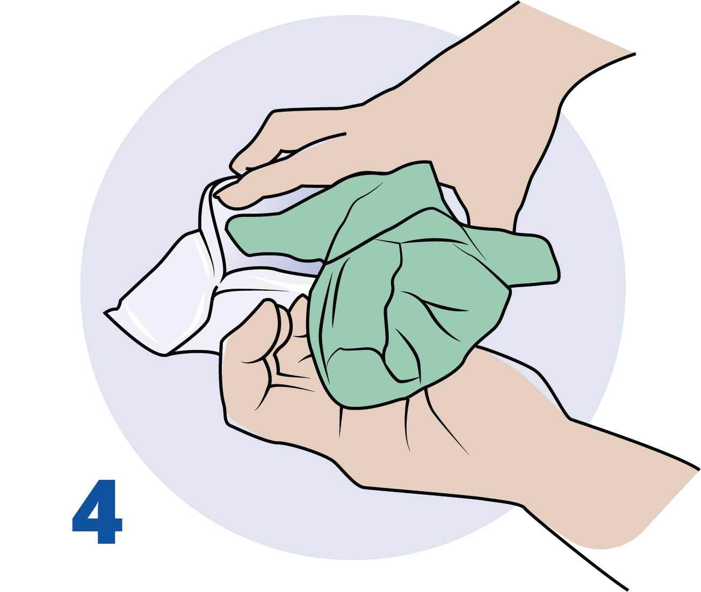

Chaque leçon du module en ligne est ramenée à ses quatre ou cinq idées essentielles. Ce document ne remplace ni le manuel, ni les capsules, ni la pratique en classe. Il vous sert de point de repère avant le volet en présentiel et de rappel rapide après la formation.
Le savoir en ligne, le geste en classe. Arrivez en présentiel en maîtrisant ces points.
Contenu du module
00
Introduction au chapitre
01
Les premiers soins
02
Le leadership
03
Les lois et responsabilités
04
Prévention de la transmission des maladies
05
Les structures du corps
Repères en bas de chaque fiche
Manuel de l'apprenant : section correspondante dans l'encyclopédie en ligne, accessible après authentification via siriusmedx.com/manuel.
Manuel terrain : pages 11 à 19 du guide de poche à emporter en région isolée.
Cinq leçons pour anticiper le risque avant de devoir le traiter
Pourquoi ce chapitre : en région isolée, les secours sont loin. La meilleure intervention est celle que vous n'avez pas eu à faire.
1
Prévenir vaut mieux que traiter. La majorité des accidents en région isolée sont évitables par une bonne préparation, un encadrement adéquat et une lecture continue du risque.
2
Le secouriste en région isolée fait plus qu'un secouriste urbain. Délais prolongés, ressources limitées, décisions autonomes : votre rôle couvre la prévention, la prise en charge et la gestion de l'évacuation.
3
Le module suit une progression logique. Rôle du secouriste, leadership et planification, cadre légal, protection contre les maladies transmissibles, puis fonctionnement du corps que vos interventions soutiennent.
4
Le savoir en ligne, le geste en classe. Ce que vous apprenez ici sera appliqué en présentiel : retrait des gants, examen des lieux, gestion de groupe, scénarios.
L'objectif du secouriste : donner les meilleurs soins possibles, le plus rapidement possible, sans créer de nouvelles victimes.
Milieu urbain
Régions isolées
Accès aux soins
Minutes
Heures à jours
Ressources
Disponibles, spécialisées
Limitées, improvisées
Communications
Faciles, 9-1-1
Limitées, numéros locaux
Environnement
Contrôlé
Hostile, changeant
Figure 1 — Ce que le délai d'accès aux soins change dans votre rôle.
1
Quatre principes de base, partout et toujours. Assurer la sécurité de toutes les personnes présentes, empêcher de nouvelles blessures, poser les gestes qui sauvent la vie, transférer la responsabilité des soins aux services préhospitaliers dès que possible.
2
Milieu urbain et région isolée : deux réalités. Voir la figure. Le délai transforme le rôle : vous ne faites pas que stabiliser en attendant, vous prenez en charge.
3
Connaître le réseau d'urgence local. Services médicaux d'urgence au sol (PI, PR, TAP), SMU aérien, incendie, police, recherche et sauvetage. Le 9-1-1 n'est pas fonctionnel partout : les numéros qui fonctionnent réellement doivent figurer au plan d'urgence.
4
Secouriste ou professionnel de la santé. Le niveau de formation et le contexte dictent le degré de soins à prodiguer. Le secouriste doit reconnaître ses propres limites face à une victime gravement atteinte.
5
Les qualités attendues du secouriste. Rester calme, organisé et diligent, faire preuve de professionnalisme, maintenir ses compétences à jour et être un modèle par un mode de vie sain et sécuritaire.
Vos responsabilités en prévention et en gestion des risques
Le leader est toute personne responsable d'un groupe en région isolée : chef d'expédition, guide, directeur de camp, superviseur de chantier.
Figure 2 — La prévention se joue avant le départ, dans cet ordre.
1
Un leader compétent, un rôle clair. Forme physique, expérience et formation adaptées à l'activité. Quand plusieurs leaders encadrent un groupe, les rôles sont définis d'avance. Le ratio leader/participants respecte les lignes directrices de l'activité.
2
Adapter le groupe à l'activité. La disparité entre les capacités des membres et les exigences de l'excursion est une cause fréquente d'accident. Rencontres préparatoires et formulaires médicaux permettent d'anticiper les problèmes, rarement d'exclure.
3
Un plan de gestion des risques. Évaluer la sévérité des risques, puis les prévenir, contrôler, réduire ou éliminer. Informer clients et travailleurs des risques inhérents, idéalement par un discours de sécurité et un document écrit.
4
Un plan d'urgence écrit. Rôles du leader, options prédéterminées, moyens de communication, points de sortie et modes d'évacuation identifiés sur une carte, contacts d'urgence dans un contenant étanche, date de révision prévue.
5
Plan de route, région et dangers locaux. Laisser le plan de route à un ange gardien qui alertera les autorités en cas de retard, et l'aviser au retour. Connaître les accès, sorties, services locaux et leurs limites. Vérifier les maladies et dangers de la région et prévoir la vaccination assez tôt pour qu'elle soit efficace.
Deux systèmes juridiques au Canada (droit civil au Québec, common law ailleurs), une même prémisse : chacun doit se comporter de manière raisonnable.
1
Devoir et norme de diligence. Le leader a l'obligation légale de prendre soin du groupe. La norme de diligence est celle établie par les pairs, les normes de l'industrie et le bon sens : vous prodiguez uniquement les soins correspondant à votre formation. La négligence est un manquement à cette norme qui cause un préjudice prévisible.
2
Protection du secouriste de bonne foi. Au Québec, la personne qui porte secours est exonérée de responsabilité, sauf faute intentionnelle ou faute lourde (Code civil, art. 1471). La Charte québécoise oblige à porter secours à qui est en péril, sauf risque pour soi ou autrui (art. 2). L'employé secouriste agissant à la demande de l'employeur est protégé (Code canadien du travail, art. 126 (3)).
3
Le consentement avant les soins. Consentement éclairé : la personne consciente et apte est informée, puis accepte. Consentement tacite : une personne inconsciente est présumée consentir. Mineurs : parents ou tuteurs, ou l'adulte responsable (in loco parentis). L'incapacité (intoxication, altération de l'état mental) modifie l'évaluation de l'aptitude.
4
Le droit de refuser. Toute personne d'âge légal et apte peut refuser un traitement. Documentez le refus, expliquez les risques, restez disponible et réévaluez.
5
Confidentialité, abandon, documentation. Ne divulguez les informations qu'aux personnes qui prennent le relais des soins. Une fois les soins commencés, ne cessez pas sans transfert à une personne de compétence égale ou supérieure. Le rapport d'accident rempli sur place est un document légal : conservez-le.
Une maladie transmissible se propage d'un individu à un autre. Vous protéger, c'est aussi protéger la victime et le reste du groupe.

1. Pincer l’extérieur du premier gant au poignet.

2. Le retirer en le retournant, sans toucher la peau.

3. Glisser deux doigts nus sous le second gant.

4. Envelopper le premier gant dans le second, puis jeter.
Figure 3 — Retrait des gants souillés, pratiqué en classe.
1
Quatre modes de transmission. Contact direct (sang, liquides biologiques), contact indirect (objets, pansements souillés), transmission aéroportée (gouttelettes, aérosols) et transmission par vecteur (tiques, moustiques, animaux).
2
Les précautions universelles. Traitez tout sang et tout liquide biologique comme potentiellement infectieux, chez toute victime, en tout temps.
3
L'équipement de protection individuelle. Gants, masque de poche pour la ventilation, lunettes ou écran facial, vêtements de protection. Masque chirurgical pour les gouttelettes, N95 pour les aérosols.
4
Retrait des gants et lavage des mains. Retirez les gants sans toucher leur surface externe (technique vue en classe), puis lavez-vous les mains : c'est le geste le plus efficace contre la transmission. Nettoyez le matériel réutilisable et éliminez les fournitures souillées de façon sécuritaire.
5
Exposition et immunisation. En cas d'exposition à un liquide biologique : laver abondamment, documenter, consulter rapidement. Gardez votre immunisation à jour, en particulier le tétanos, et considérez la rage selon l'exposition et la région.
Comprendre les mécanismes naturels que vos interventions soutiennent
L'homéostasie est le maintien continuel d'un milieu interne stable. Toute urgence est une rupture de cet équilibre.
1
De la cellule au système. Cellules, tissus, organes, systèmes. La cellule est l'unité de base : elle convertit les nutriments en énergie et en chaleur et exige un apport constant d'oxygène et de glucose.
2
Les systèmes sont interdépendants. Le système respiratoire apporte l'oxygène, le système cardiovasculaire l'achemine aux cellules, le système nerveux détecte et ajuste, les reins et le système digestif règlent liquides et nutriments.
3
Sept éléments essentiels. Eau, oxygène, glucose, électrolytes, tension artérielle, température, équilibre acido-basique (pH). Chacun doit rester dans une plage étroite.
4
L'oxygène d'abord. Les cellules du cœur et du cerveau sont les plus sensibles au manque d'oxygène : dommages irréversibles après 4 à 6 minutes. Les voies respiratoires et la respiration ont toujours préséance sur les blessures locales.
5
Lire chaque urgence à travers ces sept éléments. Hémorragie, hypothermie, déshydratation, hypoglycémie, choc : à chaque fois, un ou plusieurs éléments sortent de leur plage. Vos gestes visent à les ramener : chaleur, hydratation, sucre, oxygène, perfusion.